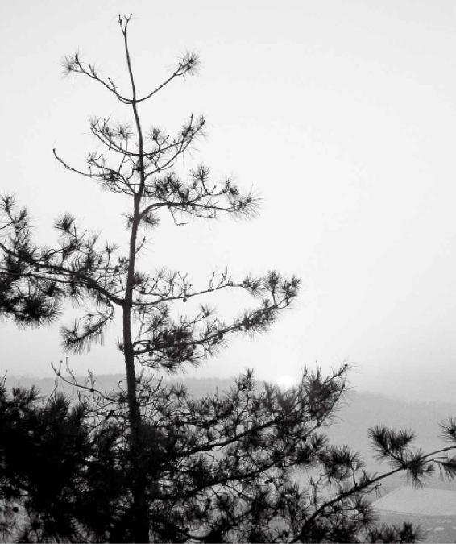

“精”是生命的根本
把精养足，来年春天就不会生病
夏天汗出少了，秋天身体就要“中毒”
号脉可以提前探查病气
经文：
夫精者，身之本也。故藏于精者，春不病温。夏暑汗不出者，秋成风疟。此平人脉法也。
“精”是生命的根本
五谷是补充精的最好东西
梁冬：接下来开始讲“夫精者，身之本也”。
徐文兵：我曾说“顺”是“鼻涕眼泪往下流”，其实有点开玩笑。一个人是不是顺从你，是不是很温顺，你从哪儿能看出来？
梁冬：从态度，对吧？
徐文兵：可以从脸上看出来，一个人顺从或者温顺，脸上的表情、肌肉的走向是竖着的。一个人满脸横肉，龇牙咧嘴，让人一看就不顺，你得把他捋顺了。“顺”指的是一种面部表情。
一个人顺从或者温顺，脸上的表情、肌肉的走向是竖着的。一个人满脸横肉，龇牙咧嘴，让人一看就不顺，你得把他捋顺了。
梁冬：肌肉群走势。
徐文兵：其实一想，每个汉字背后的智慧，我们真的是用而不知。
梁冬：“夫精者，身之本也”。为什么“精”是“米”和“青”构成的呢？
徐文兵：那个“青”字还能拆成什么？
梁冬：“青”下面是一个月，上面是什么呢？
徐文兵：上面等于两个“土”摞在一块儿， “月”是肉！“精”，一个是五谷之精，五谷是精之本，所以，想养精蓄锐就要吃什么？
梁冬：吃米。
徐文兵：吃五谷。为什么说五谷是补充精的最好东西？因为把五谷转化成精所消耗的能量是最少的。
为什么说五谷是补充精的最好东西？因为把五谷转化成精所消耗的能量是最少的。
梁冬：是最容易消化吸收的。
徐文兵：陈水扁停止绝食以后，报纸马上出了一条消息——陈水扁开始进食米汤，他怎么不吃肉呀？
梁冬：对呀，他为什么不吃肉呢？
徐文兵：很多人大病一场后，就想吃小米粥、咸菜。因为当你身体消耗得很厉害、元气不足，又想依赖于外界补充自己的精气神时，五谷是最容易转化的。我们想健康长寿就要节能减排，尽量减低自己转化异物时消耗的气血和能量，所以吃五谷是最经济的。
爱吃肉的人安祥不下来
梁冬：有些人不吃主食光吃肉，很危险吧？
徐文兵：其一，消耗你很多能量；其二，吃肉的人欲望强、攻击性强。
梁冬：动物也是如此，比如，老虎和羊就不一样，对不对？
徐文兵：安详的“详”就是用 “羊”来构字，怎么不用“老虎”呢？因为老吃肉的动物根本安详不下来。
古人说“食谷者慧”，想要开 “慧”，就吃五谷。《曹刿论战》里说了这么一句话：“肉食者鄙，未能远谋。”别看你混到了整天吃大鱼大肉的地步，其实你正在往纵欲那条路上走。真正要养生的话，应该吃素，或者吃五谷。
梁冬：“精”字左边是一个米，右边是两个“土”，一个“月”，这又和“精”有什么关系呢？
徐文兵：补充我们的精，需要注意以下方面：其一，“五谷为养”，吃五谷是最根本的；其二，“五畜为益”，“五畜”起锦上添花的作用，人要活得有情有义、有血有肉，就得吃些“五畜”。
补充我们的精，需要注意以下方面：其一，“五谷为养”，吃五谷是最根本的；其二，“五畜为益”，“五畜”起锦上添花的作用，人要活得有情有义、有血有肉，就得吃些“五畜”。
出家人剃掉烦恼丝，跟自己的家人的关系都撇清了、断绝了，自己一个人静静地修习，只吃五谷就会比较恬淡。作为生活在正常社会中的人，有各种社会关系，就得显得有情有义、有血有肉，所以，在吃五谷的基础上，还得吃点儿肉。
梁冬：“夫精者身之本也”，“精”在您的观念里面是指什么样的东西呢？
人体所有的体液都是“精”
徐文兵：“精”是指我们的脑髓、脊髓、骨髓。我们经常说的一个词叫“精髓”，骨子里的东西都是“精”。“夫精者身之本也”，精是我们生命的基础。
梁冬：生小孩的那一口浓痰化不开，也是精吗？
徐文兵：那是生殖之精。我们的细胞里面有细胞液，细胞之间也流动着体液，淋巴管里也有血液，“地球上百分之七十是水，人百分之七十也是水”，但是这个水不是我们喝的那个水，而是我们的体液。所有的体液都属于我们的精，液体或者半固体的东西都是“精”，这是我们生命的根本。一个人老出汗、老拉肚子、老吐口水、老吐痰、老流浓鼻涕，或者流的白带特别多、老遗精，这都是在伤精、伤本。
所有的体液都属于我们的精，液体或者半固体的东西都是“精”，这是我们生命的根本。
梁冬：有“痰”的话，吐还是不吐啊？
徐文兵：有“痰”就吐，但是真正修行到高的境界就不会生“痰”。你可以把它顺利地转化成元气和神。炼精化气，化成你的元气；炼气化神，变成你的智慧，这是正路。
梁冬：“夫精者身之本也”。此话怎解？
徐文兵：冬天要闭藏，不要让自己飧泄，出过多的汗。“飧泄”是完谷不化的意思，拉出来的东西中有没消化的东西，或者是呕吐、拉肚子，把自己的肠黏膜、黏液都拉完了。
梁冬：吃葡萄皮儿吐葡萄皮儿。
徐文兵：为什么说不让你冬天出汗，不让你冬天拉肚子？这其实都是在漏精。漏完精后，你的身体就要出大问题。
为什么说不让你冬天出汗，不让你冬天拉肚子？这其实都是在漏精。漏完精后，你的身体就要出大问题。

把精养足，来年春天就不会生病
女人排卵的时候正是妩媚万分
徐文兵：“故藏于精者，春不病温”。意思是说如果你在冬天把自己的精养得很足、藏得很好，到了春天生发的时候，就不会得温病和热病。
梁冬：我们都知道，一天中的晚上就相当于冬天。既然说冬天是藏精的时候，那么年轻的夫妇应该晚上“合”还是早上“合”呢？
徐文兵：人是万物之灵，人情要远远比春夏秋冬和早晚时辰重要。夫妻两个人都动情的时候，就是最佳时期。
人是万物之灵，人情要远远比春夏秋冬和早晚时辰重要。夫妻两个人都动情的时候，就是最佳时期。
我的博客上有人留言：我们夫妻俩想生个好孩子，我们是不是应该预算一下受孕的日子？
这就有点刻意了，人算不如天算，情之所至、春情萌动的时候受孕是最好的。男人都受过女性来例假的时候那种恶劣脾气的伤害，但有阴就有阳，有恶劣脾气的时候就有好脾气的时候，女性温顺、柔媚、柔情似水的时候，你猜那是什么时候？
梁冬：什么时候？
徐文兵：排卵的时候。女人的身体也是一个春夏秋冬，有自己的一套循环系统。一般来讲，女性在排卵期的时候性格最好，容颜温顺、态度温柔，这时也是最动情的时候。男人错过了这个时间段，没给女人伺候好，人家求子怀孕未遂，例假来了，脾气当然就不好。
女性在排卵期的时候性格最好，容颜温顺、态度温柔，这时也是最动情的时候。
火上头了叫烦
梁冬：接着讲“藏于精者，春不病温。”
徐文兵：“肾主藏精”，肾的功能是致冷的，心的功能是致热的。往开扩展一下，肝往上走，也是致热的，肺是致冷的。
梁冬：脾是什么？调和，是吧？
徐文兵：脾在中间，它起一个平衡作用。到了夏天，人会觉得热，觉得特別躁。其实，肾精足的人，体液循环会好，好像空调里面的氟利昂加得足，致冷效果就好；氟利昂如果没有了，精漏完了，外面一热，就跟着热，这样的人就是肾精不太足的人。
有的人到了夏天，喝冷水，吃冷饮，吹空调，想把自己心火的温度降下来。古人讲：“心静自然凉。”谁能让心火静下来，谁克火？水克火。这个水不是指冷饮，而是我们的精化成的体液，体液循环起来以后，自然能够让你平静下来。还有一个字也带 “页”字，一个“火”加一个“页”，念什么？
梁冬：“烦”！
徐文兵：什么叫烦？火上头叫烦。你的火苗儿往上蹿，火性炎上，该怎么调治？你的肾水足了以后，它自然就不烦了。肾水一虚，人就会表现为“別理我，烦着呢”！整天看着谁都不顺眼，因为心火太旺。
肾水一虚，人就会表现为“別理我，烦着呢”！整天看着谁都不顺眼，因为心火太旺。
梁冬：这就是从群龙无首到亢龙有悔。
徐文兵：能够潜下来，就是让人的肾精变得更足一点。
梁冬：火神派的郑钦安①在他的书里面讲到如何把心火那条龙引下来，我觉得他治病的所有策略都是这样，对不对？
徐文兵：对，但前提是肾精要足，如果你锅里没水的话，怎么引都引不下来的。
梁冬：也藏不住。
如果冬天精没藏好，开春很容易得温病
徐文兵：“冬伤于精，春必病温”，很多人一到开春儿以后，突然就会高烧起来。
梁冬：对啊，感冒啊什么的。
徐文兵：这就是得了温病了。温病和伤寒的区別在哪儿？温病受的是热邪，热邪会使阳气萌动。外界阳气一生发，你的阳气就被鼓舞起来。热邪直接伤哪儿？
温病受的是热邪，热邪会使阳气萌动。外界阳气一生发，你的阳气就被鼓舞起来。
梁冬：应该是内臟吧？
徐文兵：直接伤我们内臟。
寒气是阴邪，它先伤的是阳，人体对伤寒的第一道防线叫足太阳膀胱。寒气是从下往上走，先伤足太阳膀胱经，再伤足阳明胃经，或者再伤足少阳胆经，它是从六腑这个阳伤起来的，所以它不可怕，六经传遍，慢慢儿往上走。
温病是火邪热邪，直接入臟，根本就不经过六腑，它第一个伤的是手太阴肺，所以《温病条辨》②第一句话叫“温邪上受”，它不是从足下起的，而是从口鼻进来的。“温邪上受，首先犯肺”，犯的肺就是手太阴肺。
梁冬：当年那个SARS就是这个样子吧？
徐文兵：SARS是一种温病，它“逆传心胞”，如果你的肺这道防线不太稳固的话，它直接就攻到了第二道防线，叫手厥阴心胞经。伤到肺的时候，人的表现是咳，然后皮肤开始出现红疹、瘙痒，或者是发高烧伴有咳。开始是干咳，如果你肺的阴液比较强，就会咳出一些痰，这些痰就把邪气带走，人就没事了。
如果肺阴液不足的话，邪气就会往里走，伤到心胞。伤到心胞，马上就会出现扁桃体炎，咽喉变得红肿。五臟在体表都有开窍，肝开窍于目，肾开窍于耳，脾胃开窍于口，心开窍于哪？
梁冬：舌。
徐文兵：窍就是个窟窿，舌不是窟窿吧？
梁冬：那心就只能开窍于喉咙，对不对？
徐文兵：对，心开窍于咽喉。扁桃体一大、一红、一肿，这就说明热邪到心胞了，所以扁桃体如果化脓感染以后，很可能会引起心肌炎，开始往心上走了。邪气到心胞以后，人会出现抽搐。有的小孩子一高烧，烧得有点抽风了，爹妈能吓死。如果心胞这道防线再被突破，就到哪了？
心开窍于咽喉。
梁冬：到心？
徐文兵：就到心了，这是最后一道防线，就是手少阴心经。到了这就相当于直捣老巢、直捣太和殿了，到心以后人就开始出现神智症状，就开始昏迷，说胡话。另外，心主血，皮下有出血点，其他地方也会出血——鼻子会出血，身体其他部位也会出现好多出血症状。
梁冬：七窍流血啊！
徐文兵：如果再不及时抢救，人就会死掉。温病伤人是很快的：先伤肺，再伤心胞，然后直指人心，伤到心神。如果冬不藏精，春天就会得这种温病。
温病伤人是很快的：先伤肺，再伤心胞，然后直指人心，伤到心神。如果冬不藏精，春天就会得这种温病。
从根儿上捯，如果你的“精”和体液充足的话，热邪就伤不着你，在肺的阶段就把它干掉了，不会点得灯枯油尽，然后往心胞和心上走。
我们中医学说有四大经典：《黄帝内经》《伤寒杂病论》、《金匮要略》，还有《温病条辨》③。《温病条辨》就是详细论述温邪与伤寒对人的不同伤害，辨证不同，所以用药完全也不一样。
富贵之人为什么爱得温病
梁冬：有一个学派叫温病派。
徐文兵：红叶老师师承的那一派就是温病学派，就是叶天士、吴鞠通他们那一派。我发现，经济越发达人们的生活越富裕，得温病的可能性越大。
梁冬：温病派应该在江南地区流传比较广吧？
徐文兵：富庶地区的达官贵人得温病的非常多，得伤寒病的基本都是穷苦老百姓。三国那会儿军阀混战，人民流离失所，曹操在诗中写道：“白骨露于野，千里无鸡鸣。”张仲景写《伤寒论》时说：“余宗族素多，自建安以来大概有十分之六七都死于伤寒。”
富庶地区的达官贵人得温病的非常多，得伤寒病的基本都是穷苦老百姓。
为什么呢？战乱以后，田地荒芜了，青壮年都被征去当兵，人们吃不上粮食，就容易得伤寒。中国现代社会你猜得什么病的人多？
梁冬：富贵病——温病。
徐文兵：对，温病。为什么得温病呢？《黄帝内经》说是因为冬天流失的精太多了。现在的人们“灯红酒绿不夜天”，整天熬着夜、喝着小酒，整天都在伤精。
现在的人们“灯红酒绿不夜天”，整天熬着夜、喝着小酒，整天都在伤精。
梁冬：怪不得听红叶老师课的病人都是高端客户，个个都是有钱人呢！
徐文兵：全那样儿的！红叶老师的授课时间全都在工作日，所以，都是有钱有闲的人才去听课。
徐文兵：你不是请郭生白老师讲《伤寒论》嘛，其实有机会应该请一个老师来讲讲温病学派的理论，特别针对现在这种时弊。
现代社会大家富裕了，都有机会去吃喝玩乐，但是乐过头了以后，就会伤到自己的精。伤到精的一大表现就是开始得温病。
伤到精的一大表现就是开始得温病。
梁冬：那瘟疫算不算温病呢？
徐文兵：温病和瘟疫的区别在哪儿？这两种病受的邪气不太一样，比如，温病跟伤寒的症状有区别，温病患者也发烧但不恶寒，发着烧、扯着胸口、蹬着被子、要吃冰、要冷饮，是受了热邪；得伤寒的人虽然发着高烧，但很怕冷。一测他的体温有38℃、39℃、40℃，但是盖多少层被子他都觉得冷。这就是发烧、恶寒，伤了寒了。
综上所述，冬天养精是很重要的。
③另一种说法是《黄帝内经》、《难经》、《伤寒杂病论》、《神农本草经》。
夏天汗出少了，秋天身体就要“中毒”
夏季的恩物：六一散、藿香正气水、十滴水
徐文兵：“暑”字挺有意思——上面一个“日”，下面还有一个“日”，中间是个“土”。中医讲六淫邪气：风、寒、暑、湿、燥、火，只有 “暑”是复合邪气。为什么叫复合邪气？因为暑必夹湿。
暑和热区别在哪儿？
梁冬：就是湿，对吧？
徐文兵：夏天有个特点：温度高，湿度也高，如果一个人同时受了热邪和湿邪，就会中暑，他们的表现很有意思，体表热得跟火炭一样，但肚子却是冰凉的。
如果一个人同时受了热邪和湿邪，就会中暑，他们的表现很有意思，体表热得跟火炭一样，但肚子却是冰凉的。
梁冬：为什么这样呢？
徐文兵：脾胃被湿气困住了。
梁冬：阳气上不来。
徐文兵：脾胃吸收了我们喝进去的水、饮料后，通常会出点儿汗。但中暑的人的脾胃功能被湿气阻滞住了，所以，他们外面烧得很厉害，里面的水供应不上。
暑病是矛盾的结合体，怎么调治呢？一个人发烧，你得给他用凉药，如果他的脾胃是寒的，就要先把他脾胃中的寒湿之气去掉，得用热药，但是他外面还高烧，这就很矛盾。中医取了个平法，用不太热的药、芳香醒脾的药。
梁冬：藿香。
徐文兵：对，用藿香、佩兰、紫苏这些有香味的药芳香醒脾，还要用到淡渗利湿的药。中医有个非常有名的调治中暑的方子，叫六一散，里面有两味药：滑石、甘草，都是利尿的。吃完这副药以后，会先把水湿去掉。
很多人说：“我一肚子水，湿气为什么不能把我的热气给屏蔽掉？”试想，你在大海里航行时周围是不是都是水？你会不会被渴死？
梁冬：大海里都是咸水，不是一回事！
徐文兵：同理，水湿和正常体液也不是一回事儿。所以，想让自己的津液复生，就先得把邪气去掉。
“六一散”用滑石6克、生甘草1克配成散剂。为什么配成散剂呢？中医用丸、散、膏、丹、汤、液都有讲究。散剂就像土一样，它能把水湿吸收掉。用 “六一散”先把湿气排掉，然后再用我们经常用的藿香正气水，把体内吸收进去的水湿化成我们的体液。还有个更厉害的药叫“十滴水”。
梁冬：这个东西我听说过。
徐文兵：“十滴水”调治中暑特别有效，里边用的药很热，非常适合调治中了阴寒邪气后肚子绞疼的症状。
先将脾胃的湿气去掉，再用一些凉的药，这就是中医调治暑病的原则和思路。
夏天预防中暑切记：第一，虽说“无厌于日”，但别到太阳底下暴晒；第二，千万别把自己的脾胃闹凉了，脾胃一凉，便容易中暑。
夏天预防中暑切记：第一，虽说“无厌于日”，但别到太阳底下暴晒；第二，千万别把自己的脾胃闹凉了，脾胃一凉，便容易中暑。
梁冬：是不是晒着太阳喝冷饮，会比较容易中暑呢？
徐文兵：晒着太阳吃海鲜、喝冷饮绝对会中暑的。夏天很多人中暑以后，会出现吐和泻，最好不要去制止。
梁冬：那是身体的自然反应，对不对？
徐文兵：这种反应其实是在去掉脾胃里面的湿气痰浊。如果夏天出现吐泻，可以补点儿糖和盐——有点糖，还有0.9%的盐水，用这个及时补充体液就行了，千万别去制止人体正常的排除毒素的反应。
梁冬：用郭生白老师的话来说，这叫做排异。
徐文兵：我经常嘱咐中暑的病人有“四大不能吃”：冷饮、水果、牛奶、绿茶。曾经有一个患者，原来是卖咖啡的，她经常喝点儿咖啡，结婚以后想要孩子，就停了咖啡改喝绿茶。结果喝得一肚子寒凉，脸上长了一层黑斑。
曾经有一个患者，原来是卖咖啡的，她经常喝点儿咖啡，结婚以后想要孩子，就停了咖啡改喝绿茶。结果喝得一肚子寒凉，脸上长了一层黑斑。
梁冬：我还以为长了一脸绿斑呢。
徐文兵：我告诉她，咖啡长在热带南美洲，属于热性的饮料，而绿茶适合南方人在炎热的天气喝，北方人喝不太适合。
夏天应该多出点汗，谈点恋爱
梁冬：“夏暑汗不出者，秋成风疟”。夏天还是应该多出点汗的，对不对？
徐文兵：对，夏天的时候，人要比其他季节多出点汗，因为阳气往表走，可是现在很多人夏天不出汗，很可怕的一件事儿。第一，说明他们没有阳气；第二，说明他们没有体液；第三，说明他们经络闭塞。
现在很多人夏天不出汗，很可怕的一件事儿。第一，说明他们没有阳气；第二，说明他们没有体液；第三，说明他们经络闭塞。
有个朋友给我留言说：“徐老师，自打我听了你和梁冬的节目以后，我不喝冷啤酒了，今年夏天我开始出汗了！”可见，他以前的汗全被冰镇、闭塞住了。
所以，夏天我们要适当出点儿汗，如果你非要吹空调，抑制出汗，身体会本能地感到不舒服。
夏天我们要适当出点儿汗，如果你非要吹空调，抑制出汗，身体会本能地感到不舒服。
梁冬：夏天出点汗，另外谈点恋爱，就叫作“若有爱在外”，对不对？
徐文兵：夏天如果你不让汗出来，到了秋天就要落病的。黄帝说了“秋成风疟”，如果夏天你没有把邪恶的东西排出去，秋天一闭藏，把这些东西收回到体内就成了伏邪。
老看勾心斗角的负面东西，人的命运会受影响
梁冬：有个电视剧叫《潜伏》吧？
徐文兵：这个电视剧挺有意思。演员的演技太棒了！我对电影、电视比较关注，我看人喜欢察言观色。如果有些东西简直惨不忍睹，我就不看。但是《潜伏》这部电视剧，从主角到配角都演得很出彩，会让你不由自主地跟着看，但我看了几集后，觉得心里特别不舒服。
梁冬：“潜伏”了，呼应了，是吧？
徐文兵：因为老看这种阴寒负面，人与人之间勾心斗角、互相猜忌的内容，心情就会很不爽。有几位病人看完《潜伏》后犯了病。好的电视剧或者好的演员可以带动人的情绪和情感，居然把我都带进去了！
老看这种阴寒负面，人与人之间勾心斗角、互相猜忌的内容，心情就会很不爽。
梁冬：那些演员太入戏了，是吧？
徐文兵：演员一定要能入戏、能出戏，出不来你就要完蛋。
梁冬：当年那部电视剧《红楼梦》，演员们都十分投入地去演，后来很多人的命运都受到影响。
徐文兵：古代人演戏，为什么要戴个面具呢？戴个面具，我是剧中人；卸了面具，我就是我自己。京剧演员虽然不戴面具，但涂脸谱，一卸妆，自我马上又回来了。
梁冬：对，有个角色认定的问题。
徐文兵：角色不由自主就会影响人的心神，好像封建迷信说的附体一样，你穿上那套行头，你所说的话，所流露的情感就不是你了。
现在很多演员，一入戏后便出不来，因此而得病。我看到几则报道，有的演员经过很长时间才把自己调整过来，有的演员甚至去世了。所以某些电视剧或者某些戏，有些人还真不适合看。
现在很多演员，一入戏后便出不来，因此而得病。所以某些电视剧或者某些戏，有些人还真不适合看。
梁冬：如果控制力不好的话，我建议干脆做个本色演员算了。
徐文兵：我佩服那些大家，入戏后还真能出来！傅彪演大腕的时候就对着塑料人，说哭，立马就哭了……当时看了，我头皮就有点发麻。我给学生们讲课，没有教材、没有讲义，讲几个小时依然讲得很流利；到电视台录节目，我对着摄像机那一只水汪汪的大眼睛，大脑就会空白。
梁冬：因为你平常看到的都是两只眼睛，突然看到一只眼睛的，还是很可怕的，对不对？
徐文兵：但是那些气场强的老师，比如说于丹，她可以对着桌椅板凳讲几个小时课。像我就需要看着别人脸色，看别人眼神，要有反馈才行。人家瞪我一眼，我就觉得哪不对了；人家会心一笑，我马上心花怒放。让我对着桌椅板凳，能把我讲死。
我建议大家晚上睡觉前，要把电视这个“陌生人”请出卧室。
我建议大家晚上睡觉前，要把电视这个“陌生人”请出卧室。
梁冬：对。
徐文兵：电视里面演的都是几十年前发生的事，你却看得涕泪交加，然后躺在床上心潮起伏，辗转反侧，夜不能寐，傻不傻呀？
有一次，我跟马未都一块儿做节目，他说了一句话：“卧室就是卧室，请把电视请出卧室。”
很多人失眠就是因为家里有个异物，它老带着一些奇奇怪怪的信息，跟你八竿子打不着。如果说你为孩子高考，为单位的升迁，心烦意乱睡不着还情有可原，为了一件和你没关系的事纠结，真不值当。
刚才说到《潜伏》，那些做特工的人都是心理素质超常的人。那个活儿一般人真干不了。
梁冬：尤其是女特工，对不对？
徐文兵：我们还是做个普通老百姓吧！
夏天不爱出汗的可怕后果
梁冬： “夏暑汗不出者，秋成风疟”，“风疟”又是怎么回事呢？
徐文兵：如果夏天你的汗没出完，到了秋天，汗毛孔的闭合收敛就不大利索，就好像你要关门，门上却卡了个缝儿。另外，“疟疾”是一种正邪交争的反应，你想推它出去，它就不出去。但调治“疟疾”与用麻黄桂枝汤发汗不一样，所以《伤寒论》里面专门有一章论“少阳病”，调治往来寒热用小柴胡汤。
如果夏天你的汗没出完，到了秋天，汗毛孔的闭合收敛就不大利索，就好像你要关门，门上却卡了个缝儿。
梁冬：小柴胡汤有什么功效？
徐文兵：小柴胡汤的功效，第一是驱邪气，驱邪气的药有柴胡、半夏、黄芩；第二是可以鼓舞正气，用党参、生姜、甘草、大枣。这是两组药。因为疟疾是正邪交争，你得驱邪，还得扶正。小柴胡汤正好顺应了 “驱邪又扶正”的顺序，所以中医调治风疟，叫“往来寒热，胸胁苦满，心烦喜呕”——老想吐却吐不出来，吐完了以后又挺舒服，身上一阵冷、一阵热，就是用这种方法去调治。
如果不想得风疟，夏天就要多出点儿汗。然而现在很多人，夏天干脆不出汗了，把寒气闭在身体里面，已经到了“寒入骨髓”的状态。
如果不想得风疟，夏天就要多出点儿汗。然而现在很多人，夏天干脆不出汗了，把寒气闭在身体里面，已经到了“寒入骨髓”的状态。
梁冬：伤筋？
徐文兵：伤筋就是我们说的“肌腱病”，还有伤骨，第三就是伤髓，就是更往里走。
梁冬：那白血病是怎么回事？
徐文兵：白血病，包括现在很多人得的再生性障碍贫血，其实就是伤髓导致的。因为血液是从骨髓里造出来的，伤了骨髓就无法顺利化生成血液。现在人说治白血病得做骨髓移植，其实是寒气入到了骨髓，把人的造血功能压制住了。如果往根上捯，就是四季养生、养长、养收、养藏不当造成的。如果表现在半表半里，打个摆子别人就知道你是病了，而且病在表面。而那种寒入骨髓的病，有潜伏期，不知道什么时候就发病了。
梁冬：这就很可怕了。
徐文兵：等到一定的时机，周围的人会惊疑，这人怎么突然得了这么一场大病。其实，敌人早就潜伏在他的中枢、中央、骨髓里面了。
号脉可以提前探查病气
现在人该有的没有，不该有的越来越多
梁冬：怎么才能够知道，病灶有没有潜伏下去呢？
徐文兵：号脉。红叶老师的脉法是我见过的最好的脉法。学中医跟师承有关系，我的老师教我一套切法，就是探查病气。
十二经络皆有动脉，我们用的是一个比较笨的方法，需要摸的地方很多。独取寸口，这种方法是扁鹊发明的，在扁鹊之前，普通大夫都要三部九候，上、中、下三部都摸一下遍，来确定是经弱、气弱，还是气虚。
扁鹊受到长桑君的教授，得了真传以后，他的望诊的功夫特别强。“望而知之谓之神”，他是位神医。另外，“切而知之谓之巧”，所以扁鹊切脉“独取寸口”。
扁鹊是可以独取寸口的——有一些超常感应能力的人可以光号寸口脉。寸口脉就是我们手腕上寸、关、尺，桡动脉搏动处。
梁冬：验证一下而已吧，他基本上也已经看的差不多了。
徐文兵：对。司马迁写《史记·扁鹊仓公列传》，记载扁鹊的故事，说 “特以诊脉为名耳”，只是挂一幌子，如果不给你摸一摸吧，不像回事。但是在摸你之前，人家都看见了，扁鹊是可以独取寸口的——有一些超常感应能力的人可以光号寸口脉。寸口脉就是我们手腕上寸、关、尺，桡动脉搏动处。如果你没那个本事，还是踏踏实实去三部九候。
“十二经皆有动脉”，你摸摸太谿有没有脉跳动，太谿脉没有跳动，你说人肾虚；太谿脉跳得嘣嘣的，你还说人肾虚，这就不对。中医是有诊断的客观依据的，不是上来就说你这虚那虚，给我拿出证据来，是吧？
很多病人都问我：“徐大夫，你给我看看病，你说我哪儿虚啊？”
我说你怎么不说你是实证啊，人们现在都承认自己虚，不承认自己实。
人们现在都承认自己虚，不承认自己实。
梁冬：怎么会实呢？
徐文兵：什么叫虚？该有的东西没有。什么叫实？
梁冬：不该有的却有了。
徐文兵：有慧根，能举一反三。该有的东西没有叫虚，有了不该有的东西叫实。现在的人都从虚、不足发展到了“有了不该有的东西”的状态。
该有的东西没有叫虚，有了不该有的东西叫实。现在的人都从虚、不足发展到了“有了不该有的东西”的状态。
梁冬：这是不是应该做减法呢？
徐文兵：为道日损，为学日益。到我这里治病，很多人问，为什么我这么虚，你还给我驱邪气？我说虚是你的本质，我不否认，但是现在你的身体上有了不该有的东西。这样的情况，如果还用滋补法，就是在“关门打狗”，公牛进了瓷器店。
梁冬：所以，人生还是应该做减法。
徐文兵：投鼠还忌器呢，所以怎么办？不能补，也不能益。为什么不能益？
梁冬：越加越多。
徐文兵：家里有了敌人，你再给敌人好处，敌人就更猖獗了。解放战争的时候，蒋介石那么多美械装备都是外来滋补的，最后都落到解放军手里了——没有枪，没有炮，敌人给我造。在这种情况下，你不能给他用滋补的东西，要先把这些不该有的东西去掉，然后再给他补漏洞，加进益的东西。
所以说，号脉这件事儿，红叶老师他们这派传的都是比较好的，一号脉就知道病情。
中医绝不可能批量生产
梁冬：我觉得号脉这件事情说明，中医绝不可能批量生产。
徐文兵：不可能。
梁冬：这就和教钢琴一样，怎么能批量生产钢琴师呢？这都需要手把手地教。
徐文兵：对呀。怎么可能让一帮耳不聪、目不明的人去行医呢！你看好多人挤兑中医说：“你们号脉能号出什么来？”我说乐队指挥负责几十个人演奏，你拉错了一个音符，人家就会说：“梁冬你拉错了。”我们在底下傻呵呵听，谁错了？不知道，但乐队指挥就知道。这是一种培养出来的敏锐的感觉能力。
学中医，要看根器，有了根器，但是没人传授给你（没有师承），你也学不会。还有，给人号脉时得全心全意，如果还想着股票，那肯定号不准的。曾经有个大夫号脉时心不在焉，摸着人家的手表说：“你这个心率还挺准！”
判定一个人是不是称职的中医，号完脉后你问问他，我的心率是多少？
我给大家出个主意，判定一个人是不是称职的中医，号完脉后你问问他，我的心率是多少？
李时珍写的《濒湖脉学》里面有27种脉象，最简单的，我们管慢叫 “迟”，管快叫 “数（shuo）”，再快叫急，正常人叫“缓”。古代没有表，是怎么确定脉的频率的？一息四至，一息——一呼一吸之间跳四下。
李时珍写的《濒湖脉学》里面有27种脉象，最简单的，我们管慢叫 “迟”，管快叫 “数（shuo）”，再快叫急，正常人叫“缓”。
梁冬：这个呼吸是医生的呼吸还是病人的呼吸？
徐文兵：是医生的呼吸。古人号脉之前先调自己的息，医生调息就跟练功一样，一呼一吸之间会感觉到，常人之脉跳三下，病人的脉跳四下。迟脉，要么就是阴寒内盛，要么就是阳气不足。脉动超过四下，五下、六下就是有热，这叫数脉，体内要么有虚火，要么有实火。这些起码的脉象，医生在号完脉以后应该告诉病人。现在有表可以计算，除了心跳还要看心律。心跳是有节奏的，健康的人心律是齐的，是匀速跑，不会出现停跳、间歇，否则就叫心律不齐了。
医生给你号完脉，你要看看大夫给你号脉时那个手指头是不是凉的。如果医生仨手指头是冰凉的，你就别让他看病了。人手凉的时候，气到不了手指的末端，什么都感觉不到的，他自个还麻痹着呢，能给你看病吗？你不从他身上招病就不错了。
以前有个笑话：有个中医大夫给人看病，怎么证明自己是中医呢？得号脉吧，但号脉又号不出个所以然来，只好装腔作势在那儿号。先号左手，心里默念“床前明月光，疑是地上霜。举头望明月，低头思故乡”。默念完了，再号右手，再默念“锄禾日当午”，念完了，脉滑数。
梁冬：全都是这样啊？
徐文兵：不是全都这样。这就是说，中医的精髓失传以后，大家都变成 “愚者佩之”那个“佩”了。你不号脉，无法证明自己是中医；你号脉，什么都不知道，“指下了了，心中难明”。
梁冬：故“平人脉法也”，此话怎讲？
徐文兵：有人说，这是一句衍文。其实，在春夏秋冬四个季节中，人的脉是不一样的，你通过探查人的脉象，可以得知他到底是哪个季节得了什么病。春天应该浮，冬天应该沉，这是中医检查人号脉的理论依据。大家想学号脉，要先去修身，气脉通了以后，手会发热，手指的末梢就会有感觉，最简单的感觉——当你把手放到没生命的桌子上，能感觉到指尖有脉动在跳，这样你才有资格给人号脉。
在春夏秋冬四个季节中，人的脉是不一样的，你通过探查人的脉象，可以得知他到底是哪个季节得了什么病。
梁冬：我感觉自己把手指按在桌子上的时候，还是有脉的跳动的。
徐文兵：《黄帝内经》有将近五分之一的章节都在讲号脉，这是一门非常深奥的学问。以后，我们慢慢学。
《黄帝内经》有将近五分之一的章节都在讲号脉，这是一门非常深奥的学问。
梁冬：我觉得真的非常了不起，您说号脉这个事情，怎么能够轻易讲得出来呢？所以，我们的古人是非常了不起的。
夏天睡觉时，最要防的是空调或风扇
徐文兵：《金匮真言论》的第一段我们讲完了，主要讲的是春夏秋冬容易刮什么风，容易导致什么病，然后怎么调治，俞在什么地方。
梁冬：说到此处呢，我插一个小问题：夏天晚上在家里睡觉的时候吹风扇，不同方向吹来的风有没有差别呢？
徐文兵：古代没有风扇，就是自己摇大蒲扇。这是比较柔和的人造风，比较舒服。老百姓有个说法叫“最忌讳吹穿堂风”。为什么吹穿堂风不好呢？因为对流特别强。像我们现在买的住宅是南北通透的。
老百姓有个说法叫“最忌讳吹穿堂风”。为什么吹穿堂风不好呢？因为对流特别强。
梁冬：板儿楼。
徐文兵：板儿楼是很时兴的样式，一开窗空气一对流，风就特别大，风的穿透力强，携带的能量或者信息也强。当人睡着以后，人的卫气——就是保卫自己的那个气会缩回到体内，人的气就比较弱，如果再吹着风，就特别容易得病。
当人睡着以后，人的卫气——就是保卫自己的那个气会缩回到体内，人的气就比较弱，如果再吹着风，就特别容易得病。
人睡着了以后，吹的那种风就叫贼风。很多小孩子晚上睡觉会蹬被子，早上起来清鼻涕出来了，有的嗓子开始疼，有的还会发烧。还有些大人，睡着以后也会吹风着凉，有的人会出现身体局部麻痹，有的人会出现眼睛、眼皮跳，还有的人比较严重，会面瘫。
梁冬：这是很危险的。
徐文兵：很多人问我，怎么过夏天。
梁冬：不能吹风扇，又不能开空调。
徐文兵：我说心静自然凉。人有一套制热系统是心火，心火苗一撩就热了；还有一套制冷系统是肾水，你把这套系统打开以后，就好像身体里面有一个循环，它会平静。
我夏天看病的时候，如果我要给病人扎针，屋里绝对不能吹风也不能开空调。我自己一般都是打着领带，穿着白大褂。心里要平静，你不着急，它就不热。特别热的时候，我一般是把空调的除湿功能打开。这不是让它降温，而是让它除湿，因为我觉得湿气比热气对人的伤害更大。除湿以后，屋里会稍微干燥、凉爽一点儿，趁着这个劲儿，赶紧盖毛巾被一睡，等再热的时候你已经睡着了。
湿气比热气对人的伤害更大。
人睡着以后，各种代谢活动都会降低，人的体温也会降低，那会儿外边热你会不觉得热；相反，如果是那些身体不好的人、躁的人，他们手脚心发烫，往往睡不着，睡着了以后又容易醒，这就是肾水不太足的原因。
人睡着以后，各种代谢活动都会降低，人的体温也会降低，那会儿外边热你会不觉得热；相反，如果是那些身体不好的人、躁的人，他们手脚心发烫，往往睡不着，睡着了以后又容易醒，这就是肾水不太足的原因。
梁冬：我有个朋友说，他热得实在不行，就把隔壁房间的空调打开。
徐文兵：有的病人家房子大、房子多，他们就把隔壁房子的空调打开吹吹风，然后进来一些冷风。这样做也可以，但是就怕对流。
梁冬：还有一些朋友，洗完澡以后没擦干就睡了。
徐文兵：第二天肯定闹病。
梁冬：这是什么原因呢？
徐文兵：头发没擦干本身就是一种湿气，加上一种寒气。古代讲，女人来了例假，不应该去洗浴、去沐浴，更不要去泡澡。现在女性来例假后感觉身上发黏、发热，然后就去冲头，结果例假马上就没了。
头发没擦干本身就是一种湿气，加上一种寒气。
梁冬：热水洗头也不行吗？
徐文兵：热水洗完头，如果不很快拿干毛巾把头发擦干，或者不拿电吹风把头发吹干，湿着睡一晚上，第二天就容易闹病。
梁冬：为什么外国人晚上洗完头，开着空调，然后喝一杯冰镇牛奶再睡觉，一点事儿都没有呢？
徐文兵：你怎么知道一点事都没有？
梁冬：这倒也是啊！
痰病是人攒出来的
徐文兵：人受了风以后马上身上痒、打喷嚏或者发烧，这就是很快有反应了。就好像吃饭，同样一桌饭，这个饭有点不干净或者是有点过期了，如果大家食物中了毒，健康人是第一个反应的，还是最后一个反应的？
梁冬：应该是先反应的，对吧？
徐文兵：第一个反应出来的，他们会上吐下泻，证明身体对这个有知觉、有感觉。
梁冬：大觉者嘛。
徐文兵：中国人身体弱，一吹点儿风，第二天马上会咳嗽、流鼻涕、嗓子疼、流眼泪、发烧，这是健康人；不健康的人就是门户大开、长驱直入。
中国人身体弱，一吹点儿风，第二天马上会咳嗽、流鼻涕、嗓子疼、流眼泪、发烧，这是健康人；不健康的人就是门户大开、长驱直入。
梁冬：还没事！
徐文兵：表现出来就是没事儿，但是这种寒气已经到了血液甚至骨髓里。若干年后，很有可能会突然长出一个阴寒凝滞的肿瘤，或者会得癌症。癌症从哪儿出来的呢？常言道，冰冻三尺非一日之寒，病是坚持不懈、长期积累、苦心孤诣攒出来的。
梁冬：总而言之，夏天最好的降温方法还是靠肾水自我冷却。
徐文兵：真的，心静自然凉。但是都市的喧闹把人的心火撩拨起来，就静不下来。所以，天热人躁，翻来覆去，睡不着觉。
梁冬：盖被子，是只盖肚子，还是要盖上脚呢？
“为什么要冬暖脊背夏暖肚”？
徐文兵：要盖肚子，脚可盖可不盖。我们习惯讲“冬暖脊背夏暖肚”，冬天一定要盖住后腰，因为后腰容易着凉；夏天一定要盖着肚子，不然的话就会拉肚子。
梁冬：再次提醒大家，虽然夏天的晚上没有风，但电风扇和空调吹的也是风，所以也要注意防风。